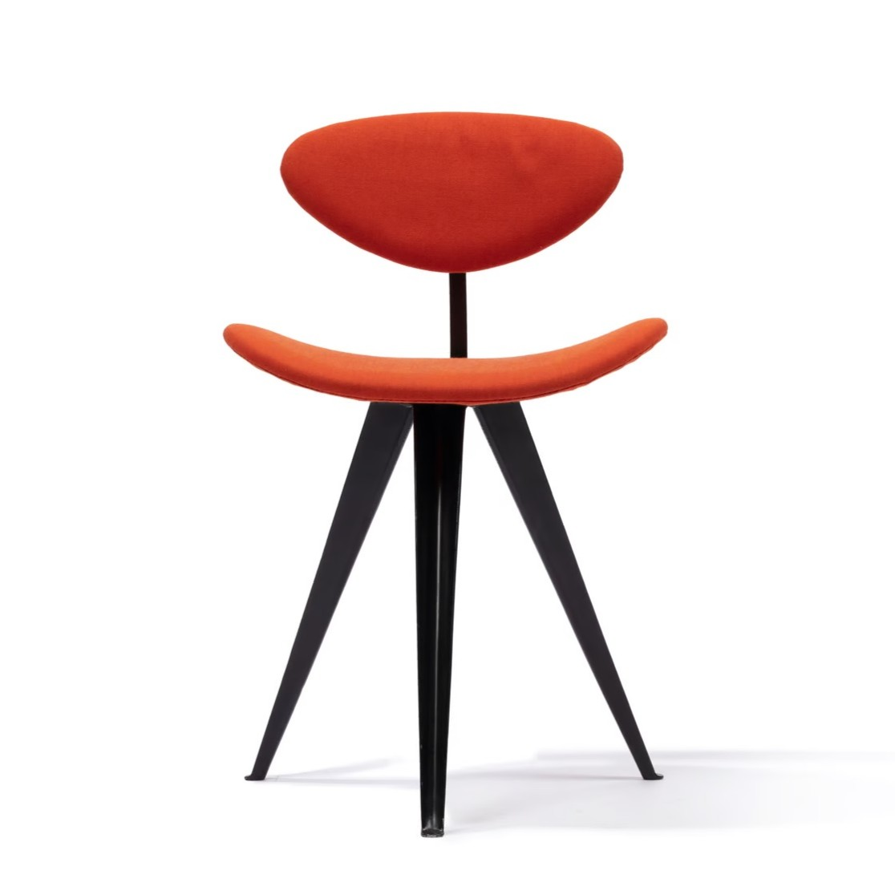

Furniture
Gordon Andrews was an active furniture designer, producing a range of modernist chairs, tables, and storage units. ... His furniture designs reflected his commitment to simplicity, function, and refined aesthetics. He often worked with locally sourced materials, incorporating timber and steel to create elegant yet practical pieces. Notably, his lounge chairs and modular storage units showcased his ability to merge craftsmanship with industrial production techniques, making high-quality design accessible to Australian households.

Rondo Chair

Spider Chair

Gazelle Chair
The Gazelle chair represents an important aspect of his work - furniture design. Although Andrews is best known as a graphic designer (he designed Australia's first decimal currency banknotes between 1963 and 1966), his practice covered interior design, sculpture, painting, experimental installations, photography, jewellery, environmental design (including wayfinding and murals), furniture and textile design. This graceful three legged 'Gazelle' chair, made of plywood, cast aluminium, steel and wool, is a slightly modified version of a chair Andrews designed during his time as design consultant to the Italian firm Olivetti. It featured in the company's showroom in London (1954) and in Sydney (1956). By 1957, the original four wooden legs were replaced by three in cast aluminium. Few examples survive.
Reference